出库订单
出库订单的业务逻辑比较多，功能按钮也比较多，主要是为了完成从下单->物流人员包货->物流公司收货->确认产品出库的业务流程，到了出库一步，代表此次流程的完毕，该仓库的库存将会减少。所以出库订单操作也存在几个工作流标签，不同的工作流之间可以执行不同的操作，下面将工作流的每一步分一小点进行详解。
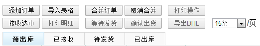
1、预出库：销售刚下的订单会显示在预出库中，等待物流接收包货，添加订单的有两个入口，分别是手工录入与导入订单表格。
(1) 手工录入，点击添加订单按钮，系统跳转到添加订单资料填写页，填写的信息有发货仓库，币别，第三方单号，产品SKU，数量，售价等，标星的台头为必填项，需要填写的项目跟导入订单的订单表格表一样，有一点需要注意的是，售价是总售价，而不是某个产品SKU的单价，如果有两个SKU，则售价是两个SKU的总售价，填写完毕后点击“检测”按钮检测填写的数据是否正确并且判断库存，倘若填写资料无误并且库存充足，则会显示“确定”按钮，确定保存即可，若库存不足，则保存后将搁置异常订单；若其它信息填写错误，则不会出现确定保存的按钮：
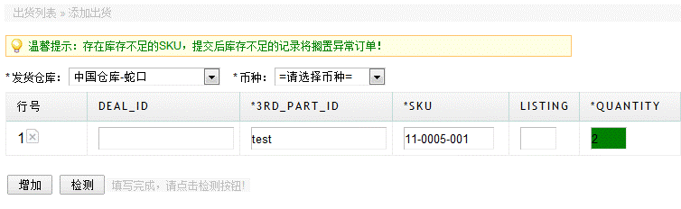
(2) 导入表格，分几种情况，包括导订单与生成订单，匹配出库等等，如下图，下面详细介绍。
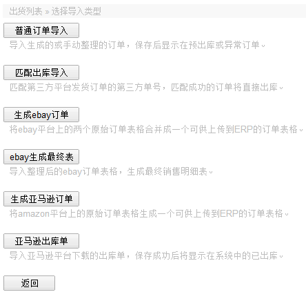
①普通订单导入，用于导入生成的或手动整理的表格订单，如果需要手工整理表格订单，需要下载表格模板，在相应的列填写信息，下载表格模板的入口也是上传订单表格的页面。
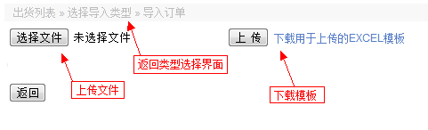
这是最普遍的订单导入操作，与手工录入一样，导入成功后，表格中的订单会罗列在预出库中，不同的是，导入订单增加了几样检测。
a) 具体检测项目如下：
库存检测 - 判断当前发货的SKU是否库存充足，库存不足则库仓会显示红单，鼠标移上去会显示库存可发数多少，只有表格status一列为Complete与Cleared 或为空时才会作库存判断。
SKU格式检测 - 检测SKU格式，格式规范如(236-41-48或者236-41-48-CD001)，最后一个是listing，保存时系统会过滤掉。
数量不能为空检测 - 避免有时候销售忘记填写的数量等情况，增加了此检测。
币别检测 - 填写的币别代码如果是系统没有录入的，则提醒错误。
仓库检测 - 发货仓库需要是系统录入的仓库名称。
第三方单号是否重复检测 - 不能与系统已经存在第三方单号重复，造成数据混乱，所以增加此检测，但status是compared状态的例外，因为compared状态的订单，就是需要匹配系统之前导过的订单的第三方单号，匹配直接出库，因为第三方发货的订单，无需经过接收，打印清单包货，手工出库等业务流程。
注：以上的检测如果不通过，则预览的表格中会有红色提醒，鼠标放上去会有提示什么错误类型，并且不会显示提交按钮，但填写数据无误，才会显示保存按钮。
b)下面介绍表格中status这一列不同的标识的意义，原始的表格模板是不存在status这一列，生成的表格模板则会有，status的内容决定系统执行哪些操作，所以生成后订单表格不能随便修改status的内容，否则会提示无效的表格表头。
Completed：完成状态，会像原始表格一样，判断库存 保存ERP，系统的具体处理逻辑图如下：
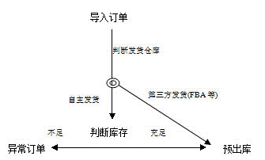
Uncleared：电子付款未到帐的订单，直接抛至异常订单。
Cleared：付款到帐状态，会从系统的异常订单中查找（通过邮箱匹配）到上次导入的Uncleared状态的订单，如果找到匹配的，再判断库存，充足的自动还原，库存不足的，依然保留在异常订单里。
Outputed：需要直接作出库的订单，无需判断库存，一般是第三方发货平台发货后导下来的订单。
Compared：通过第三方单号匹配之前completed的但非 中国仓库发货的订单，匹配成功直接出库，无须判断库存。
② 匹配出库导入，用于匹配第三方平台发货(如FBA)的第三方单号，匹配成功后第三方平台发货的订单将直接出库，进去后先下载模板表格，只有一列，就是第三方单号(3rd_part_id)，因为就是能过第三方单号匹配出库的。
③ 生成ebay订单，用于将ebay平台上的两个原始订单表格合并成一个符合ERP普通订单表格格式的可供上传到ERP的订单表格。
④ebay生成最终表，将ebay平台上导入普通订单处的表格导入此处，生成最终表，该最终表用于导入订单信息。
⑤生成亚马逊订单，将amazon平台上的原始订单表格生成一个可供上传到ERP的订单表格。
⑥导入亚马逊平台下载的出库单，保存成功后将显示在系统中的已出库。
(3) 功能与操作，在预出库中的订单，可以进行如下一些操作。
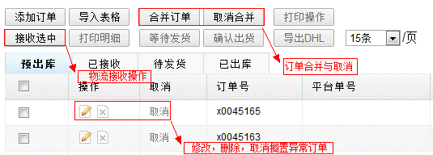
a) 编辑，可以对原订单进行信息编辑，权限取系统公共编辑权限。
b) 删除，删除订单，权限取系统公共编辑权限。
c) 合并订单，如果多个订单是发给同一个客户，需要告知物流统一包货等操作，那么可以选中需一起发货的几个订单号，点击合并订单，即可合并，合并后的订单号自动取原来几个订单中的最大订单号，合并权限取系统公共编辑权限。

d) 取消合并，即合并的逆操作，将合并过的订单解开，提醒的是，合并与取消都只能对预出库状态中的订单，其它状态点击此功能按钮系统会弹出错误。
e) 取消订单，可以取消该订单，取消的订单会搁置“异常订单”列中。
f) 接收选中，以上操作一般属于销售自行操作，接收选中则为物流操作，对销售订单进行接收，接收后的订单会显示在已接收订单中，准备打印清单进行包货，该操作需要配置权限。
- 已接收：对预出库状态中的订单进行接收后，显示在已接收。
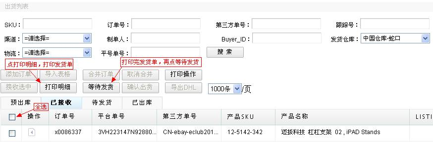
在此状态中，存在可能的误操作，可以执行回退操作，重新将订单回退到预出库。
此状态主要是对订单进行打印明细与汇总表，仓管人员凭明细与汇总表进行货品包裹，打印的明细清单与汇总清单格式如下，可见，汇总表把明细表中的数量进行了汇总，统计出某SKU的总数。
某某有限公司 出库明细单 |
产品总数：4个 制表日期：2012-04-13 |
序号 |
订单号 |
SKU |
应发数 |
渠道 |
发货方式 |
物流跟踪号 |
1 |
x0006979 |
11-3159-001 |
1 |
ebay |
香港小包 |
|
2 |
x0006980 |
16-3189-060 |
1 |
ebay |
香港小包挂号 |
|
3 |
x0006981 |
11-3159-002 |
1 |
ebay |
香港小包 |
|
4 |
x0006988 |
16-3189-060 |
1 |
ebay |
香港小包挂号 |
|
某某有限公司 出库汇总单 |
产品总数：4个 制表日期：2012-04-13 |
序号 |
SKU |
总数 |
产品名称 |
1 |
11-3159-001 |
1 |
xxx |
2 |
11-3159-002 |
1 |
xxxxx |
3 |
16-3189-060 |
2 |
xxxx |
当仓管人员已根据出货明细与汇总表包裹好产品后，需要在已接收状态中
订单进行待发货确认，操作后，已接收的订单会转至待发货工作流状态中。
- 待发货：待发货中的订单产品是准备联系物流发货的，同上可以进行批量选中订单打印，打印样式同上。
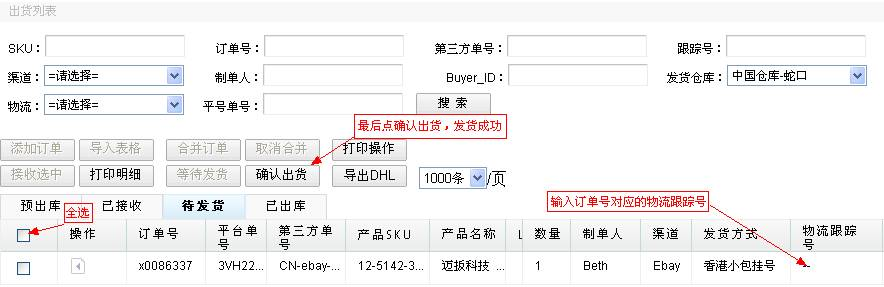
此状态列表中显示会多出一列物流跟踪号，供物流人员填写物流跟踪号，填写方式采用点击可编辑，填完后点开鼠标系统自动保存，此操作需要配置权限，当物流公司取件后，需要进行确认出货，确认后，订单会转至已出库中，系统会减少发货仓库的库存，另外，物流跟踪号也可以在已出库的状态中填写，填写物流跟踪号需要权限。
4、已出库：已出库中的订单代表已经完成了整个业务流程。产品已经发送出去了，理论上发出去的产品的订单信息不能再做任何修改，但也许也会存在有时的误操作将有误的订单确认出货了，此时需要物流人员回退该订单，由销售人员编辑后再重新出库，所以在“已出库”状态的订单中，有回退的功能，回退功能在“已接收”、“待发货”、“已出库”中都有，回退操作执行完后，订单都是回退到“预出库”中，所以订单的增删改操作，都统一在“预出库”状态中进行，在已出库状态，可以通过点击订单重发，可以做RMA，退款或退货。
重发，点击重发则系统会重新生成一个重发的订单，重发订单的单号以小字母d开头，并且售价是0，因为默认重发的订单没有收入，在预出库可查看生成的重发单，或修改信息。
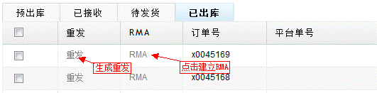
退货，如下图所示，在需要做退货单的SKU后面打勾，然后点击下拉选择数量，如果是第二次做退货，那么之前已全部退过的，会显示“已全退”，无法再退，另外必须填写退货的接收仓库，供仓管人员做入库，同时选择退货原因，供日后统计报表用，另注，退货数量会自动读取原单的发货数量，可以通过下拉选择修改，但不得大于原单数量，确定保存后，会生成小字母"r"开头的退货单，销售客服可到“退货明细”中查看。
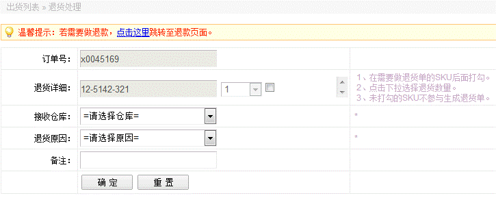
退款，退款操作同退货操作差不多，同样是勾选需要做退款的SKU，然后填写金额与交易ID，即会生成退款，生成的退款记录可以退款明细中查看。
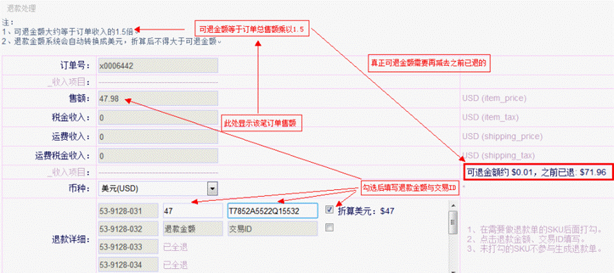
最后附上出库订单权限分配说明：
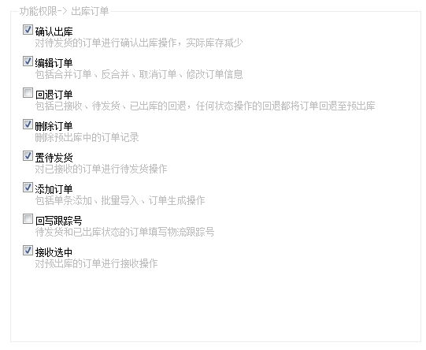